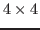

This talk presents a new approximate block factorization preconditioner for a stabilized discretization of a 3D Lagrange multiplier formulation of the magnetohydrodynamics (MHD) equations. The MHD equations are highly nonlinear and model the flow of an ionized fluid in the presence of a magnetic field. Additionally, MHD contains multiple mechanisms that interact over a range of temporal and spatial scales. As a result the discretized linear systems are stiff and require preconditioning to achieve scalability in processor count and mesh resolution.
Approximate block factorization preconditioners are an appealing choice for this problem. The linear system is segregated into the physical fields: velocity, pressure, magnetic field and the Lagrange multiplier. The resulting linear operator is a block

matrix where each physical field corresponds to a block row and column. An approximate block factorization is developed that focuses on capturing the essential mechanisms that generate the stiffness. In particular this preconditioner uses an operator split approximation that we have previously shown to be effective for a 2D incompressible MHD formulation [1]. The operator split methodology treats enforcement of the divergence free constraints (for both velocity and magnetics) separately from the velocity-magnetics coupling critical for support of the Alfven wave. This approximation neglects secondary coupling effects in exchange for a simplified velocity-magnetics Schur-complement to develop a computable sparse approximation used in the preconditioner. For the 3D Lagrange multiplier formulation used here the elliptic effects of the divergence free magnetic field must be explicitly handled in the preconditioner. We will demonstrate the parallel performance by presenting scaling results for a range of problems. Furthermore, comparisons of this preconditioner to domain-decomposition and fully coupled algebraic multigrid preconditioners will be given.
[1] E.C. Cyr, J.N. Shadid, R.S. Tuminaro, R.P. Pawlowski, and L. Chacón,
A New Approximate Block Factorization Preconditioner for Two Dimensional
Incompressible (Reduced) Resistive MHD,
SIAM Journal on Scientific Computing, 35:B701-B730, 2013.